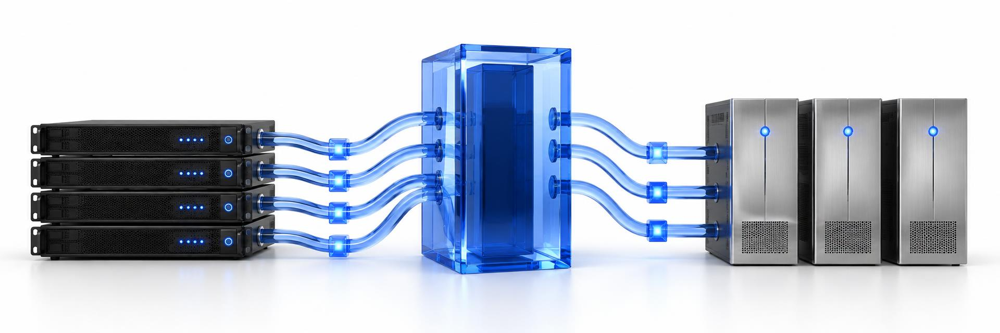

01
Register your brokers.
Define endpoints, tags, and a preferred Worker in a small YAML inventory. Browsing never contacts the broker.
A simple YAML inventory
Your IBM MQ and RabbitMQ infrastructure, in focus.
Fresh diagnostics when you need them. Quiet when you don't.
No monitoring stack to maintain.
Just a direct path from your brokers to current facts.
Define endpoints, tags, and a preferred Worker in a small YAML inventory. Browsing never contacts the broker.
A simple YAML inventoryOne authenticated, outbound WebSocket from your broker network. No inbound ports. No extra infrastructure.
Outbound by designOpen a broker, queue, or channel to get fresh diagnostics. You decide when to collect. Nothing runs in the background.
Live facts, only when requestedA connection initiated inside your network.
Read-only collection. Ephemeral results.
No inbound Worker listener.
The objects that matter to your operations.
Without becoming a broker administrator.
Inspect distributed and z/OS queue managers through the IBM MQ client, with direct endpoints or secured CCDT/TLS profiles.
Understand current node and cluster state through bounded, read-only Management API requests.
Three independent services. Install each one where it belongs, using the public release packages.
Browse all downloadsFrom release packages to your first diagnosis.
Deploy API, Web, and Workers in the right order.
Brokers, credentials, and Worker routing.
Requests, boundaries, and ephemeral results.
Deployment controls and the read-only model.
An optional private model, only when you ask.
Register a broker. Connect a Worker. Get current facts.